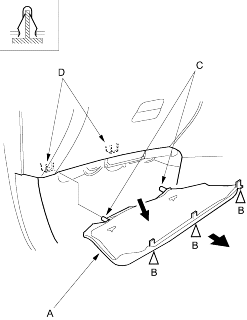
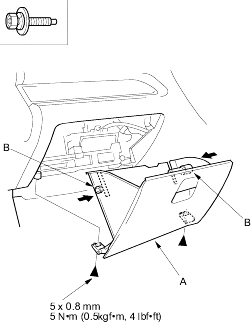

- Remove the passenger's dashboard lower cover (A).
- Gently pull down the rear edge to release the clips (B).
- Pull the cover away to release the pins (C) from the holders (D).
| Fastener Locations |
B  : Clip, 3 : Clip, 3 |

- Install the under cover in the reverse order of removal.
NOTE: Take care not to scratch the dashboard and related parts.
- Remove the passenger's dashboard lower cover.
- Remove the bolts securing the glove box (A).
Fastener Location:  : Bolt, 2
: Bolt, 2

- While holding the glove box, release the glove box stop (B) on each side from the dashboard by pushing it inside, then remove the glove box.
- Install the glove box in the reverse order of removal.